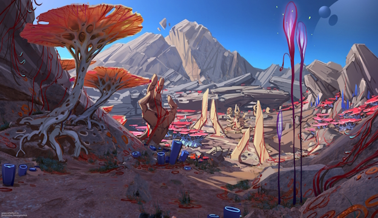

A Cradle-type planet along the Cascade line. Suitable for life with diverse cilmate. Flora and fauna are varied with native types and new speciemns from colonization. Human growth is assumed to have been ongoing for 500 years. Records show a number of large nations which have now defaulted to the main 3 powers listed in the briefing.

The People.
500 years of growth have spawned large nations, including the Leandric States Alliance (LSA), the Vestan Sovereignty, and the Republic of Okasnia. Most people on Cressidium have taken up arms in the conflict, some still lead civilian lives of course, but this is done in tandem with required service. Many are in high tensions with each other, as the forces have split among the planet each grasping for power.
Orgins
Originally, Cressidium was colonized as a Cradle-type planet, with a hospitable environment and a range of native and introduced species. However, its history took a pivotal turn during the Barren Years, a period of civil instability and warfare between the Leandric States Alliance (LSA) and the Vestan Sovereignty. The LSA formed as a coalition of smaller states rebelling against the expansionist Vestan Sovereignty, which was led by descendants of military and political leaders who fled the collapse of the ████████████.
Post-Barren
After the Barren Years, Cressidium's political situation stabilized, but the planet remained caught between these two major power blocs. The relationship between the LSA and the Sovereignty has been tense, though not yet to the point of open conflict. This delicate balance has persisted, despite assassination attempts and internal power struggles within the Vestan Sovereignty.Cressidium had been largely isolationist, with limited spacefaring capabilities and little external contact. Over time, however, the planet has developed its own space infrastructure, including space elevators and corvette-tier ships, used for deterrence and limited military operations. FOR SECURITY REASONS, SOME INFORMATION ON THIS ARCHIVE IS NOT VIEWABLE AT THIS TIME, THANK YOU FOR YOUR COOPERATION,"Union could not bring their dead back home, but they would choke the stars with the living." -UNION'S MISSION.